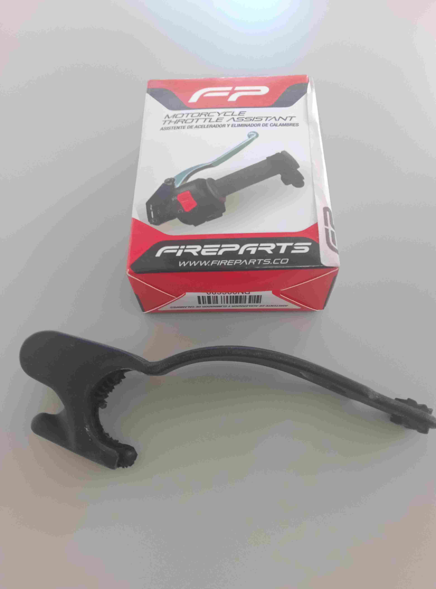

THROTTLE ASSIST REVIEW
Fireparts Throttle Assitant

I bought this throttle assistant from the Royal Enfield dealers in Panama city at a cost of $15.
It is a very simple device that is made of soft rubber that wraps around the throttle twistgrip and provides a flat surface that you can use to rest your wrist or the palm of your hand on to keep the throttle held open. By using it like this, this provides some relief for your fingers which can become stiff from constantly gripping the twistgrip as you ride.
It is secured in place by the eyelet on the long end of the strap hooking over a protruding peg moulded in to the main part of the device and it is intended to be used on the outermost part of the twistgrip.
Supplied with the device is a small hard plastic part that is designed to be pushed in to a hollow in the main part of the device. This plastic part has ridges moulded in to it which are designed to press against the rubber on the twistgrip in order to prevent the main device from easily rotating when fitted to it.
I have now used this device for some 2,000 miles (3,200 km) and I happy with my purchase as it is very good at doing what it is designed to do, namely allowing me to flex my fingers when they become stiff from gripping the throttle without stopping to do so.
The only minor issue that I have had with the device is that very occasionally when in town and using small throttle openings my glove has caught on the device and caused a larger throttle opening that I was planning to make. Therefore when this device is fitted I am now very conscious of this issue and I ensure that my glove does not touch it.